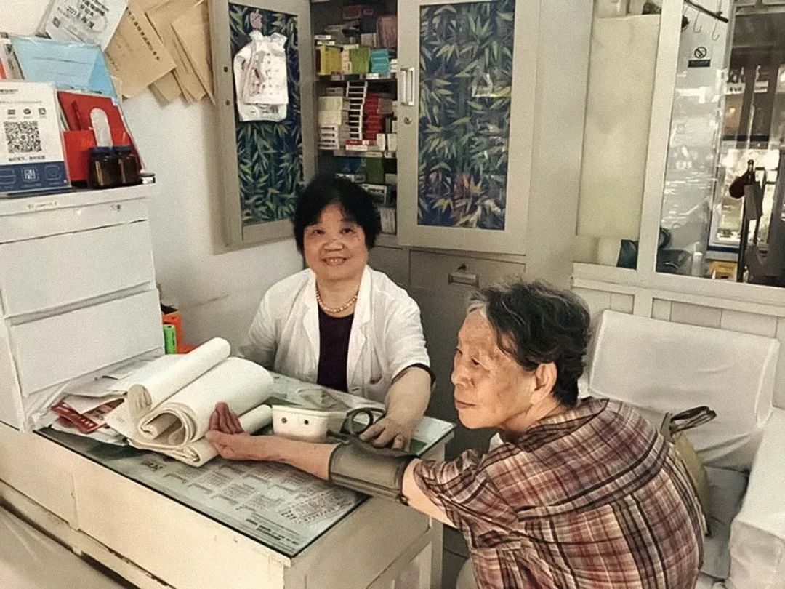
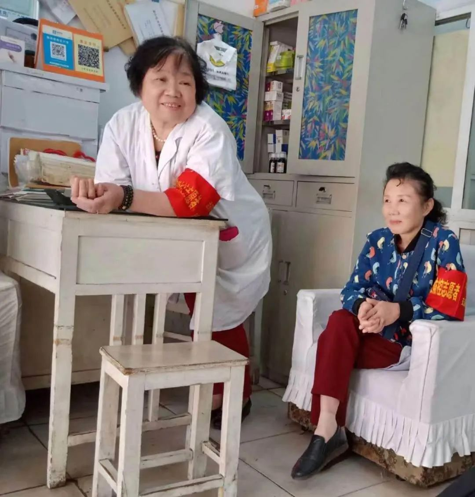
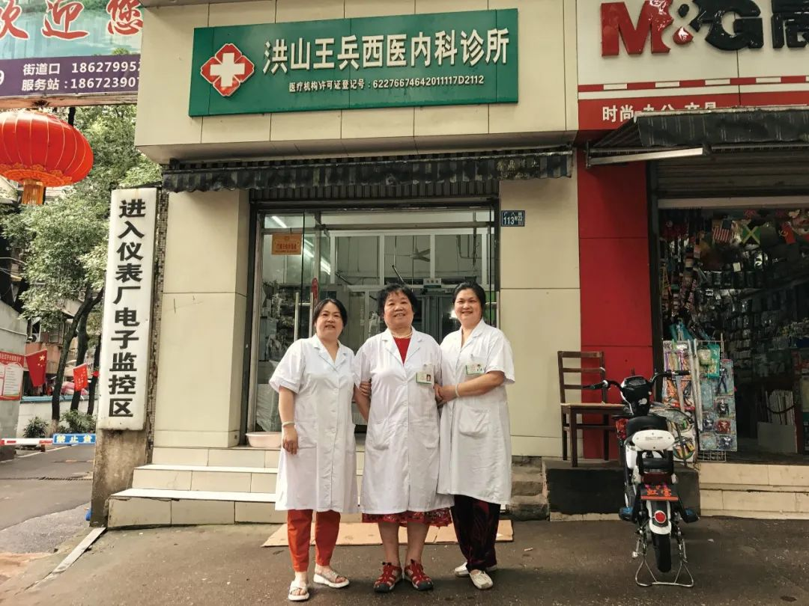
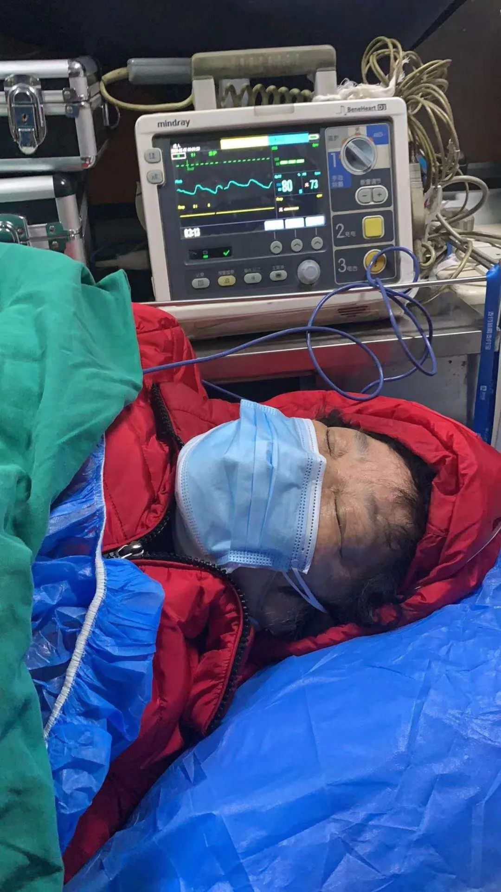

一对60岁武汉患者夫妻的求诊之路
原文链接 备份链接 赵平和冯安，武汉一对年逾60的夫妻，妻子赵平先感染，因为医院床位不足，只能自行居家隔离，丈夫冯安随后也被感染。身在武汉，他们是为数众多的，等不到床位、无法确诊、甚至没有资格计入统计数字的人。他们没有从医生口中听到“确 …

2月18日清晨，王红心里一阵惶然，早早地醒了。
6点20分左右，关于她姑姑王兵的消息从家族群里传来：医院打来电话，人还在抢救，但按压已经没有反应了。
过了7点，没有电话来。是不是抢救过来了呢？王红默念着，老天保佑，老天保佑。
7点50分，终于有了结果：姑姑去世了，已经快速火化，疫情结束后，才能接她的骨灰回来。
王兵的儿媳在群里说：“天塌了。”
此时盯着手机屏幕的王红，一下子绷不住了，抱着儿子，嚎啕大哭起来。
王红和姑姑王兵，在武汉市武电仪小区门口的诊所里共事了15年，这间小诊所依托小区而成立，20年里，它是这个小区最温馨的纽带，人们赞叹王医生医术高、医德好，是小区的守护神。

人们赞叹王兵医生（左）医术高、医德好，是小区的守护神
武汉封城后，她照常在诊所里为附近居民们看诊，为激增的病人忙到深夜。除夕这天，她还在给病人打针，大年初三，她还开门为患者们拿药。
王兵还在这个自治社区里担任了15年的业委会主任。大年三十的深夜，她安排小区子女们四处采购防护和消毒物资，努力帮助居民们挺过这次疫情，但在1月27日，她和自己的家人却相继倒下了，成为整个小区400多户中唯一的感染家庭。
王兵的噩耗传来，整个社区为之一恸，“靠山垮了”。
“王奶奶，救命”
1月初，网上流传疑似SARS病毒在武汉出现，武电仪小区门口的王兵西医内科诊所的口罩就脱销了，随后王兵去进了200个。
不过很快官方宣布未发现人传人，这批口罩就一直留着。直到十多天后，人们觉察到了疫情的危险，口罩又很快卖完。
王兵跑到各大药店去采购，此时，口罩已经涨价到一块钱一个，买回来，她以原价卖出。而她和家人自用的口罩，却是儿媳在网上以高价买回的。
1月以来，发热病人激增。一般情况下，王兵会叫病人先去医院做个检查，如果是流感，就建议他们在医院治疗。流感需要用到奥司他韦，但她的诊所没有这种药。如果是普通感冒，她告诉患者，可以回诊所打针、拿药。
在王兵诊所里当行政的王红说，当时大家以为只是流感，并没有太在意。而到了1月23日，武汉封城，疫情的乌云终于压在了每一个人的心头。
发热病人太多了，很多患者在医院里排队几天，也得不到诊治，纷纷跑回诊所，求王医生救命。王兵常常从早上忙到深夜。
诊所里原本只有王兵一个医生，此外除了做行政的王红，还有王红的姐姐，一位从军队转业的护士。因诊所人手紧缺，姐姐去年年初来帮忙，后来她说，在这里有一种当义工的感觉。
春节前，王红和姐姐各自过年去了，诊所只剩下王兵一人。让王红和姐姐没有想到的是，这一别，竟成永诀。
大年三十这天，王兵还在帮人打针，患者自己原本也不忍心了，说去医院试一下能不能就诊。王兵说，算了，也不容易，你们早点过来，我给你们打了，免得白跑。打完针，她回去吃年夜饭。此时，大部分诊所都已经关门了。

另一边，出于医生的敏感，加上业委会主任的职责，王兵比较早就响应了疫情防控。刚封城时，她去上班前，先去了一趟物业，交代购买红外线额温枪，进出前需要测量体温，进出要消毒。晚上，她组织业委会加班开会，商讨防控方案。
比附近大多数小区更早，王兵就动员大家清理楼道，清洗垃圾桶，跟业主们宣传，不要随便下楼。
大年三十，她到处联系，总算在蔡甸找到了最后几箱84消毒液，商家已经不发货了，王兵叫儿子驱车40多公里运了回来。
顾不上吃年夜饭，晚上10点，他们又去了已经放假的东西湖农机市场，联系到主管经理，购来2台电动农用箱式喷雾器，连同仅有的数箱口罩，连夜将各项防疫物资送到了物业办公室。
他们先后两次，挨个对楼道、防盗门进行消毒，基本上把整个小区13栋楼都覆盖了。
大年初一，王兵还是闲不住，全家人劝她要保重身体，她嘴上答应，但随后又一个人去了诊所。
她不忍心，这么多患者太可怜了，有年轻的患者哀求“王奶奶，救命”，家人说，遇到这样的求救，她眼里满是泪水。
到了初二初三，只要居民一个电话，即便是简单的询问和拿药，她也马上跑去开门。此时，她没有更多的防护物资，只戴了个一次性医用口罩。
直到大年初三，1月27日，实在拗不过家人的劝说，远在新加坡的女儿也要求视频在线督促，她不得不停诊。
王兵1947年生人，72岁了，依然很精神，卷曲的短发，脸有些胖，一双丹凤眼，常常保持着微笑，每个人过路，她都会打声招呼。

她双腿患有静脉曲张，常常是肿着的，这是当医生一辈子留下来的职业病。
在居民熊清群的印象中，她总是在诊所里“旋啊，旋啊”（转来转去），不肯坐下来。
这位老奶奶保持着年轻时那股女强人的坚毅、热情和雷厉风行。
停诊已经来不及自我保护，就在大年初三当天，她出现了感冒、乏力等症状。侄女王红很肯定，她就是在诊所里感染的。因为除了吃饭，除了那几次去买口罩，她几乎不上街，都在诊所里。
为了不让家人担心，她每天还跟新加坡的女儿视频报平安。但到了1月31日，她开始意识到这是病毒感染了。
医院已经人满为患，一床难求，许多人在寒风中排着长队。家人称，王兵不想去争夺重症患者的资源，索性在家自行输液。此时，她已经无法跟女儿视频了。

解忧诊所
1960年，王兵13岁，她从湖南湘潭的乡下，赶去武汉读书，投奔了她的哥哥——王红的父亲。王红对这位姑姑的印象是，她的字写得很大，像男人的字一样，也如她的名字。
心直口快的姑姑也有细腻的一面。王红说，王兵很会勾毛衣，她给王红父亲织了不少好看的毛衣，就像她多年后的那令人叫绝的缝针技术一样，她是个粗中带细的人，不然也当不了医生。
后来，王兵考取了湖北医学院附属护士学校，她跟家里人炫耀过，她把护校图书馆的书，全读了一遍。
毕业后，王兵去孝感一家医院当了护士，然后是护士长。
她的丈夫在武汉电力学院任职，是一名教师，分居多年后，为了团聚也为了孩子的成长，她不得不牺牲了个人事业，回到了武汉。随后又自学考得医师资格证，在武汉电力仪表厂医务室当了多年的医生。电仪厂的熊清群对这位同事印象极深刻：“她很有水平，医德高，内科外科都会，厂里很多病人的疑难杂症，都被她解决了。”
后来，武汉电力仪表厂改制，医务室的医生们陆续走了，只剩了一个护士。此时王兵也退了休，经营着一间茶馆，生意蒸蒸日上。仪表厂曾经的职工们，依然生活在一起，保持着熟络的邻里关系，他们说，“王医生，你不如开个诊所吧，也方便大家。”
2003年，王医生就这样回来了，她在武电仪小区门口开了个诊所——洪山王兵西医内科诊所。2006年，王红下岗以后，姑姑王兵对她说，“你干脆跟我干吧。”于是她成了诊所里的行政人员，一直到今天。

王兵医生（中）与诊所工作人员的合影
王红17岁这年，她的爸爸走了。“我和姐姐受了姑姑很多恩惠，困难的时候，姑姑常送钱、送物，她很舍得。”
有一段时间，王红家里小孩没人照顾，姑姑就每天来给小孩洗澡，再去上班，一天没有落下。早些年，姑姑受惠于她家，现在，姑姑成了侄女的“命中贵人”，她们“情同母女”。
王红心中，姑姑的缝针技术很好，医术也高。以前武汉大学菜场有一个女人，切肉时把手切了一刀，姑姑给她缝了27针。几个月后，患者回来，伸出手一看，不见印子。
有一位病人，因为心肌梗塞发作来到诊所，简单抢救后好了一些，病人要回去，但姑姑不让他走。早过了下班时间的姑姑仍守在那里，坚持让他叫侄女把医保卡带来，赶紧送去大医院。那里的医生说，送来太及时了，晚一点就可能没救。
武电仪小区这间小小的诊所为居民保留着过去时光的温情。一位武电仪小区居民说：“诊所的药可以拆开，一颗颗零卖，就跟我们小时候在医务室看病一样。”
一位冬天常去打针的女孩记得，每次“王奶奶”都会给她一个暖手袋。一位曾经住附近的打工者生病了，转了两趟车，从沌口赶来，找王兵看病。不仅因为便宜，也因为亲切和信任。
去年年底，一名大学生手指上扎了一根签子，深陷到肉里了，他走了20分钟，找到了这间诊所。王兵用针头和镊子，麻利地挑了出来。最后只收了工具费，5元钱。而同样的伤口，在旁边的二甲医院里，有人花了300元。
业委会成员齐小明和居民们笑她：“你不亏钱吗？”
她说，“赚多少无所谓，只要大家好了，我高兴，就当交个朋友。”王兵还跟齐小明说过，“大家来我这里看病，也是看得起我。”这让齐小明觉得，她是个真诚的医生，境界很高。
遇到经济条件差的，王兵就少收钱，或者免费。小区里谁家病人经济困难，她号召大家捐款，而她往往是捐得最多的。谁家有人去世了，她会送钱。

2005年，王兵当选武电仪小区的业委会主任，这是一个业主自治的老旧小区，事务繁多，琐碎，也很复杂，但她从不嫌烦。齐小明记得，王兵跟她说过，有时心里想着社区的事务，半夜就醒来了。早些年，王兵带领小区安装天然气管道，当时小区业主们争议很大，有人同意，有人不同意，也有人嫌贵，王兵一家一户地谈，总算把管道安上了。
在齐小明的印象中，王兵热心参加社区里大大小小的所有活动，她腿脚不好，但还是要去跳舞。“我跳得不好不要紧，我站后面，但我一定要参加，我们的精神要体现出来。”
齐小明说，出现感染症状时，王兵还给她打了电话，商量着再挂个横幅出去，提高大家的警惕。但王兵此时对自己接下来的身体状况一无所知。
噩 耗
病来如山倒，情况的紧急程度，超出了所有人的预料。
眼看王兵越来越虚弱，家人不分日夜地照顾，打遍了各种电话，王红还向民营医疗协会求救，仍然没有医院收治。
2月1日早上，家人驾车送往武汉672医院，“但他们不收重症，只收轻症”。
之后，儿子健儿只好开车转往陆军总医院。此时已无须挂号，院方直接把几近休克的王兵送进了抢救室，医院下达了病危通知书，医生直接给她挂上了吸氧装置。此时，王兵双肺已经变白，血氧饱和度低至60%，命悬一线。
但医生没办法让她住院，理由很简单，没有核酸确诊，没有床位。医生还说，如果找不到医院，估计挺不过今晚了。家人感觉浑身冰凉：“天天救人的医生，病重却无法入院。”
社区紧急上报街道、区里，但一套流程走下来，在生死关头，无疑是漫长的。
家人们把求救信息发布到网上，卓尔公益基金会找到他们，称有一个核酸名额送给他们，去汉口医院做。但此时王兵已经没有体力和时间去应付核酸检测了。
最后，家人们在蔡甸区人民医院找到了一张病床，2月2日凌晨1点，王兵住了院，用上了呼吸机。

王兵在救护车上
早上8点多，医生会诊，通知家属要有思想准备。医生先按3天的治疗方案来抢救。王兵有求生欲，挺过了这3天，但血氧饱和度一直没有太大的变化。
无奈之下，医生只好把王兵的气管切开，建立人工呼吸道，挂上有创呼吸机后，王兵度过了危险期。
次日，王兵醒了，护士用她的手机，拍了个视频发回来，视频里，是她戴着呼吸机，用筷子撬着饭菜吃。一家人提到嗓子眼的心，终于回落了一点点。这也是王红最后一次看到姑姑的容颜。
当天，家人买了18瓶免疫球蛋白，加钱托卖药的人送了过去。医院里值班的是外省来支援的医生，当天就给她挂了6瓶。
后来，王红给姑姑打了个电话，王兵对这位情同亲生女儿的侄女说：“我肚子饿，想吃东西。”王红说，“姑，我相信你一定能好起来，你一定要坚强，要挺住。”王兵用微弱的声音回答：“嗯嗯……”她的声音几乎听不见了。
此时，没人敢告诉王兵，她的儿子、媳妇在送她入院后，纷纷隔离到了酒店，随后查出肺部感染，儿子健儿确诊重症入院，儿媳确诊轻症，转至方舱医院。与此同时，在王兵家过年的亲家母，也确诊住院。家里只剩下王兵的丈夫和小孙子。
王兵这边，两天后原本稳住的形势，再次急转直下，她转入了ICU，之后十几天里，王红已经无法得知姑姑详细的身体状况了。
直到2月17日，家人告诉她，姑姑肾功能衰竭了，已经两天排不了尿，需要做血滤。求生意志强烈的王兵，依然在跟病毒艰苦缠斗。

2月18日清晨，像预知到有事发生一样，王红6点就醒了。此时在医院里，王兵正在紧急抢救中。于是有了开头的一幕。
王兵走了，这个噩耗现在还得瞒着王兵的丈夫，这天，王兵的女儿给老爷子打了个预防针，告诉他，老妈要是不行了，他要做个心理准备。老爷子这段时间在家里干着急，急于想知道妻子的境况。
夫妻俩恩爱一辈子，多年来，形成了“男主内，女主外”的关系，这位退休的工程师，常年为妻子烧火做饭，在她无暇回家时，就亲自送去诊所。王红难以想象这个噩耗会给这位70多岁的老人带来怎样的打击。
家里人商量的唯一策略是，寄希望于症状较轻的儿媳从方舱医院出院后，回到家里，陪在老爷子身边，再找机会告诉他。
但2月17日这天，她刚做了核酸检测，结果还是阳性。什么时候能出院，还是个未知数。
2月19日，王兵去世的第二天，小区居民们形成了共同的默契：全体瞒住老爷子，并等待他家人的归来。
作者 | 南风窗记者 何承波
编辑 | 李少威
排版 | 阿丽菜
图片 | 受访者提供
南风窗新媒体出品


点击购买最新一期《南风窗》
点在看让理性的声音传得更遥远

原文链接 备份链接 赵平和冯安，武汉一对年逾60的夫妻，妻子赵平先感染，因为医院床位不足，只能自行居家隔离，丈夫冯安随后也被感染。身在武汉，他们是为数众多的，等不到床位、无法确诊、甚至没有资格计入统计数字的人。他们没有从医生口中听到“确 …
原文链接 备份链接 一场疫情，让小余一家分离三地。但他依旧认为，自己是不幸的人中，幸运的那个。作为婚纱摄影师的他，如今在方舱里给大家拍照片。他很高兴，“在这样很苦的事里，大家都能表现出一种乐观”。 文 | 吴美芬 小余今年30岁，是一位婚 …
原文链接 备份链接 记者/梁婷 实习记者/周缦卿 陈威敬 胡琪琛 编辑/石爱华 宋建华 彭银华在住院期间留下的照片（图片来自人民日报） 如果没有疫情，彭银华会是一位幸福的新郎，一个准备迎接新生命的父亲。 29岁的彭银华去年正式成为江夏区第 …
原文链接 备份链接 致敬所有奋战在一线的医护人员。 武汉的一月，气温总在10度以下，阴雨天气占了大半。2020年1月14日那天，不仅有雨，还有三到四级的风。武汉协和东西湖医院重症监护室（ICU）主任袁海涛和他的同事，推着一个因病毒性肺炎插 …
原文链接 备份链接 住进武昌方舱的第二天，付丹看到有人在垃圾站收拾，将在地上扔得乱七八糟的垃圾捡起来放到垃圾箱里。她感到有些奇怪，清洁工怎么没有穿防护服呢。一问，原来那人是住在同一个病区的病友，住在159号床。 文***｜******* …